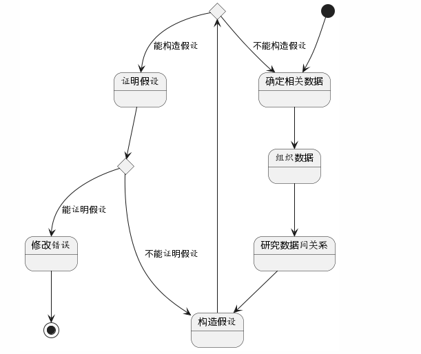
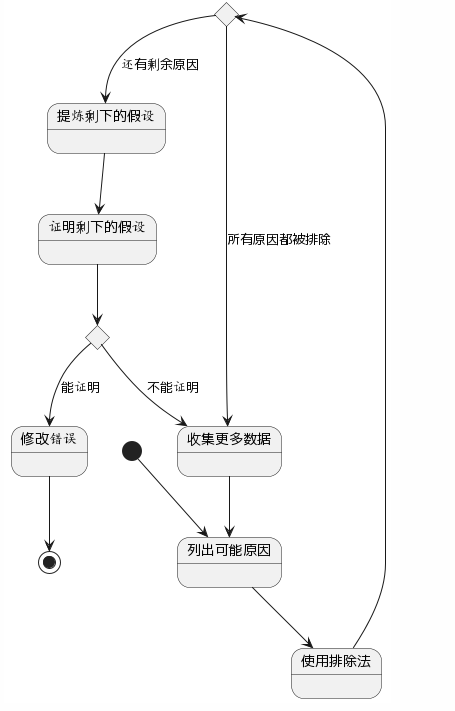

当发现程序错误时，接下来需要进行调试。调试分为两步，
1. 确定程序中可疑错误的准确性质和位置
2. 修改错误
调试程序的最为普遍的模式就是所谓的暴力方法。
这种方法之所以流行，是因为它不需要过多思考，是费脑力最少的方法，但同时效率低下，通常来讲不是很成功。
暴力调试方法
(1) 利用内存信息输出来调试。
(2) 根据一般的"在程序中插入打印语句"建议来调试。
(3) 使用自动化的调试工具进行调试。
不过，该方法的主要问题在于: 它忽略了思考的过程。
因此在下列情况下使用暴力调试方法，
(1)其他的方法都失败了 (2)作为我们下面将会讨论的思考过程的补充，而不是替代方法。
很显然，认真的思考能够发现大部分错误，甚至不需要调试人员使用调试工具。
归纳是一种特殊的思考过程，可以从细节转到全局，也就是从线索(即错误的症状,可能是一个或多个测试用例的结果)出发，寻找线索之间的联系。
演绎的过程是从一些普遍的理论或前提出发，使用排除和精炼的过程，达到一个结论(错误的位置)。
在小型程序中定位错误的一种有效方法是沿着程序的逻辑结构回溯不正确的结果，直到找出程序逻辑出错的位置。
由于调试的过程由两部分组成，即定位错误和修改错误
定位错误的原则
(1) 动脑筋
(2) 如果遇到僵局，就留到稍后解决
(3) 如果遇到了困境，就把问题描述给其他人听
(4) 仅将测试工具作为第二种手段
(5) 避免使用试验法----仅将其作为最后的手段
修改错误的技术
(1) 存在一个缺陷的地方，很有可能还存在其他缺陷。
(2) 应纠正错误本身，而不是其症状。
(3) 正确纠正错误的可能性并非100%。
(4) 正确修改错误的可能性随着程序的增加而降低。
(5) 应意识改正错误会引入新错误的可能性。
(6) 修改错误的过程也是临时回到设计阶段的过程。
(7) 应修改源代码，而不是目标代码。
错误分析包含的内容
(1) 错误出现在什么地方？
(2) 谁制造了这个错误？
(3) 哪些做得不正确？
(4) 如何避免该错误的出现？
(5) 为什么错误没有早些发现？
(6) 该如何更早地发现错误？